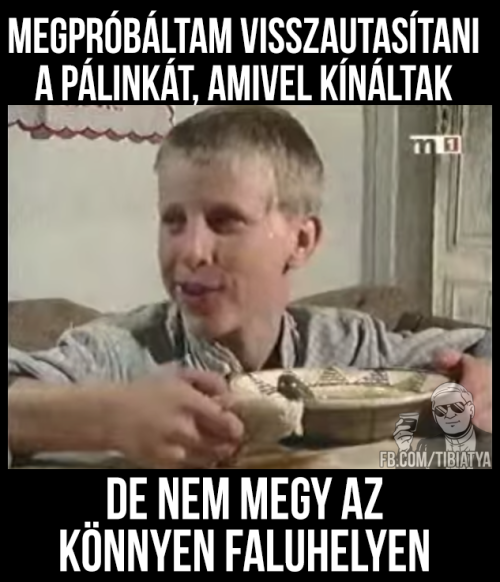

Formula D or Formula DRIFT Black Magic Pro Championship Presented by BlackVue Dash Cameras is the premier United States-based drifting series. Formula Drift, Inc. was co-founded by Jim Liaw and Ryan Sage in 2003 as a sister company to the now defunct Slipstream Global Marketing, the same partnership that introduced D1 Grand Prix to the United States.
Formula D or Formula DRIFT Black Magic Pro Championship Presented by BlackVue Dash Cameras is the premier United States-based drifting series. Formula Drift, Inc. was co-founded by Jim Liaw and Ryan Sage in 2003 as a sister company to the now defunct Slipstream Global Marketing, the same partnership that introduced D1 Grand Prix to the United States. A drift, vagy drifting (szabad fordításban: csúsztatás, sodródás) az autó tökéletes uralásának és irányításának látványos demonstrálása oly módon, hogy az autó lehetőleg egy centimétert se haladjon a szokásos módon egyenesen. A kifejezés jelentheti az erre a technikára épülő sportágat is.
The quick, brown fox jumps over a lazy dog. DJs flock by when MTV ax quiz prog. Junk MTV quiz graced by fox whelps. Bawds jog, flick quartz, vex nymphs.
Waltz, bad nymph, for quick jigs vex! Fox nymphs grab quick-jived waltz. Brick quiz whangs jumpy veldt fox.
Waltz, bad nymph, for quick jigs vex! Fox nymphs grab quick-jived waltz. Brick quiz whangs jumpy veldt fox.